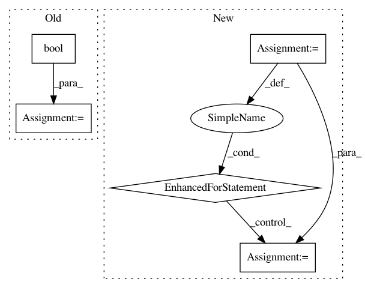

f31ee84bfdc6dc2325c8890412a965e509074d0a,streaming/python/runtime/transfer.py,DataReader,__init__,#DataReader#Any#Any#Any#,282
Before Change
py_seq_ids = [0 for _ in range(len(input_channels))]
py_msg_ids = [0 for _ in range(len(input_channels))]
timer_interval = int(conf.get(Config.TIMER_INTERVAL_MS, -1))
is_recreate = bool(conf.get(Config.IS_RECREATE, False))
config_bytes = _to_native_conf(conf)
self.__queue = Queue(10000)
is_mock = conf[Config.CHANNEL_TYPE] == Config.MEMORY_CHANNEL
self.reader = _streaming.DataReader.create(
After Change
py_msg_ids, timer_interval, config_bytes, is_mock)
self.__creation_status = {}
for q, status in queues_creation_status.items():
self.__creation_status[q] = ChannelCreationStatus(status)
logger.info("create DataReader succeed, creation_status={}".format(
self.__creation_status))
def read(self, timeout_millis):
In pattern: SUPERPATTERN
Frequency: 3
Non-data size: 5
Instances
Project Name: ray-project/ray
Commit Name: f31ee84bfdc6dc2325c8890412a965e509074d0a
Time: 2020-09-05
Author: wlx65005@gmail.com
File Name: streaming/python/runtime/transfer.py
Class Name: DataReader
Method Name: __init__
Project Name: openml/openml-python
Commit Name: 33c3a8101efe1cb66599831c03a6b960248a8718
Time: 2016-03-25
Author: feurerm@informatik.uni-freiburg.de
File Name: openml/datasets/functions.py
Class Name:
Method Name: check_datasets_active
Project Name: ray-project/ray
Commit Name: 1b1466748f1db72835a594d73d502e9787e080a9
Time: 2020-09-04
Author: wlx65005@gmail.com
File Name: streaming/python/runtime/transfer.py
Class Name: DataReader
Method Name: __init__